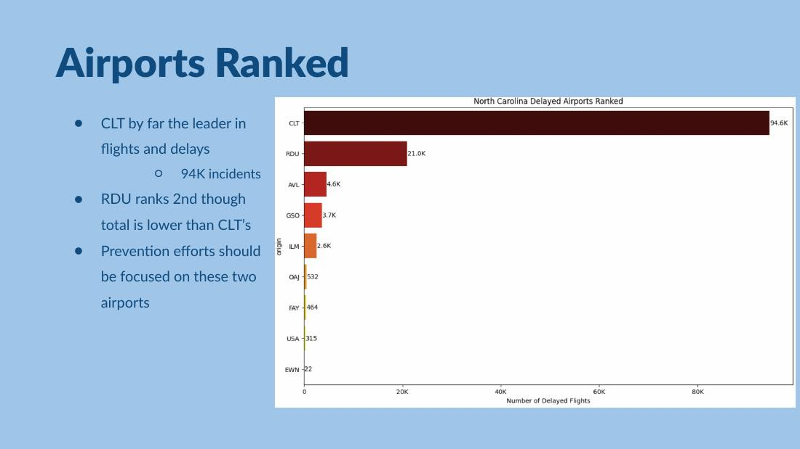
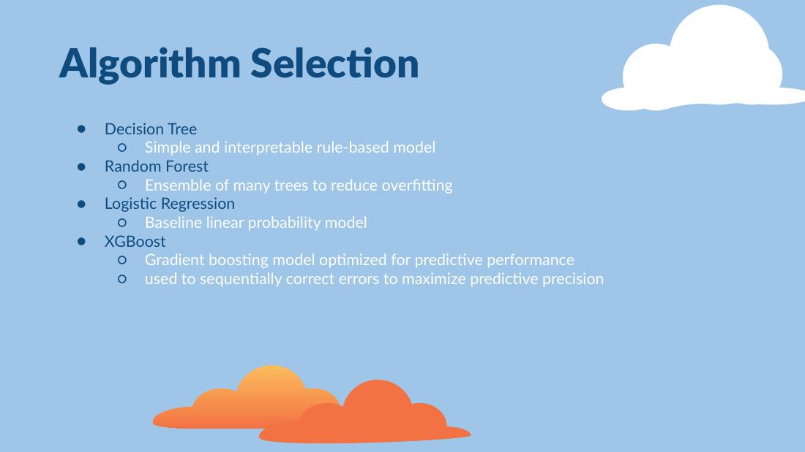
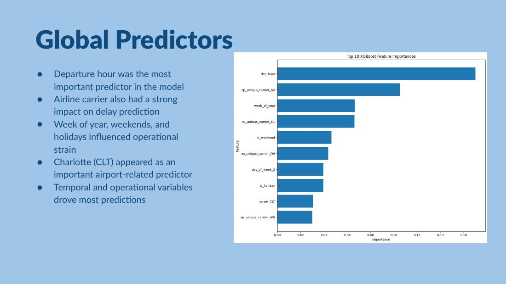

Machine Learning · Data Mining
Predicting Controllable Flight Delays
How can airlines identify flights at higher risk for delays they may actually be able to influence?



Click any project image to open it at full size.
The problem
My team focused on delays connected to carrier operations, NAS congestion and security rather than weather or late arriving aircraft. We engineered variables around departure time, weekends, carriers and airports and prepared categorical features for modeling.
What made it interesting
The delayed flight class was imbalanced, so a model could look good on accuracy while missing the flights we actually cared about. We compared recall, balanced accuracy and F1 alongside accuracy. Scaled XGBoost gave us the strongest overall balance among the models we tested.
A high accuracy score is not automatically a useful model. The evaluation metric has to match the decision the model is supposed to support.
From model to decision
SHAP helped us interpret predictions instead of treating the model as a black box. Departure hour emerged as the strongest predictor, followed by factors including carrier, week of year, weekends and holidays, and Charlotte Douglas International Airport. We connected those findings to proactive scheduling and resource allocation.